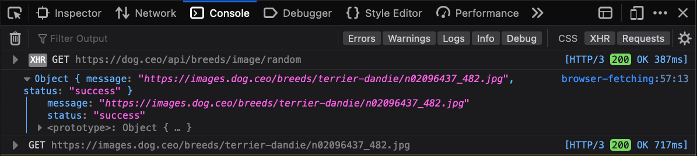

Aren't you fetching?! #
I'm uncomfortable, you're probably uncomfortable, let's move on to fetching in the web browser.
All modern web browsers supply a Fetch API for making a HTTP request to a web server, and handling the data returned from the server. The Fetch API provides a programming interface to asynchronously exchange data with a web server without needing to load another web page.
It's useful to web developers in scenarios such as:
- Displaying dynamic data that changes over time
For example, fetching current weather conditions for the given location - Partially updating the page in response to user interactivity
For example, fetching and displaying the current stock price for a user-provided stock index - Submitting forms and displaying a success or error messages without needing to reload an entire page.
For example, Adding an item to a shopping cart
Fetch's interface only requires a single argument—a url address to send the request to. The second argument is an object for specifying various options.
fetch(url, options)As with most asynchronous APIs in JavaScript, fetch returns a Promise that either resolves (succeeds) or rejects (fails) after receiving a response.
Below is a minimal example of using fetch to request a random dog image from dog.ceo. The image returned is then displayed in the page along with the full JSON response.
If you'd like to see the HTTP requests sent during fetches in your browser, open the Web Developer Tools in your browser (Command+Option+i on macOS, or Control+Shift+i on Windows/Linux) and select the Console tab.
const fetchDog = () => fetch('https://dog.ceo/api/breeds/image/random')
// Resolve the JSON returned from the url
.then(response => response.json())
// Display the image and the raw JSON in the page
.then(result => {
console.log(result)
// Get a reference to the dog image and update the image source
const dogImage = document.querySelector('#dog')
dogImage.src = result.message
// Ges a reference to a the <pre> element and insert the fetch results inside.
const resultsElement = document.querySelector('#dog-results')
resultsElement.innerHTML = JSON.stringify(result)
})
// Log any errors to the developer console
.catch(error => console.error(error))JSON from the response: #
Nothing fetched yet.
Image from the response: #
The HTTP request to fetch the dog data is reflected in the Network tab, and the data from the fetched response can be inspected in the Console panel.
Below is an example of the data in the Web Developer tools.

Summary #
The previous example only hint at the capabilities of the Fetch API. Read the "Using the Fetch API" page on the Mozilla Developer Network (MDN) for more comprehensive examples and detail on the Fetch API. Fetch isn't limited to web browsers—it's also available in Node.js v18 and can be used on the server.
Fetch is an essential API for any dynamic webpage that reacts to user interactivity. If you weren't fetching before, you sure are fetching now.